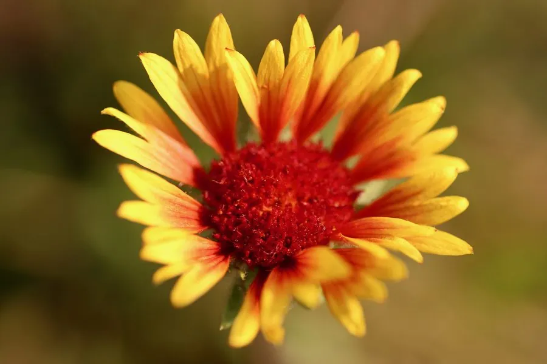

花卉与草本 · 植物界
宿根天人菊 Gaillardia aristata

菊科天人菊属多年生草本，舌状花基部橙红、先端金黄，花心紫红，色彩浓烈似毯，是耐旱的宿根花境植物。
- 分类
- 门被子植物门纲木兰纲目菊目科菊科属天人菊属
- 栖息环境
- 原产北美草原，栽培于花境，极喜光、耐旱耐寒
- 地理分布
- 原产北美大草原；中国北方与西北地区引种栽培
- 保护级别
- 暂无评估；栽培观赏植物，不涉及保护等级
物种志
宿根天人菊为菊科天人菊属多年生草本，高三十至六十厘米，茎直立，被粗毛。叶片互生，披针形至倒卵形，全缘或具浅裂，表面粗糙。头状花序单生，舌状花橙黄色、基部带紫红色，管状花紫红色，花期六月至九月；瘦果具冠毛，成熟时褐色，果期八月至十月。
宿根天人菊原产北美大草原，中国北方和西北地区有引种栽培。它极喜光、耐旱、耐寒，适宜疏松排水良好的砂质土壤，忌水涝和湿热。花色彩浓烈、花期长，是花境、岩石园和道路绿化的优良宿根花卉，成片种植如彩色地毯；也可作切花。栽培中需注意排水，花后修剪可促进二次开花。与一年生天人菊相比，本种为宿根，耐寒性更强。
形态与习性
- 株高30–60 cm，茎被粗毛
- 花期6–9 月，舌状花橙黄
- 果期8–10 月，瘦果具冠毛
- 光照极喜光，全日照最佳
- 水分耐旱，忌水涝
- 土壤疏松砂质土，耐瘠薄
- 主要用途花境、岩石园与道路绿化
趣味知识
- 宿根天人菊的舌状花基部紫红、先端金黄，像一圈燃烧的火焰。
- 它耐旱耐寒，在北方冬季可露地越冬，翌春重新萌发。
- 天人菊属的英文名意为毯花，因成片开放时像铺开的彩色毯子。